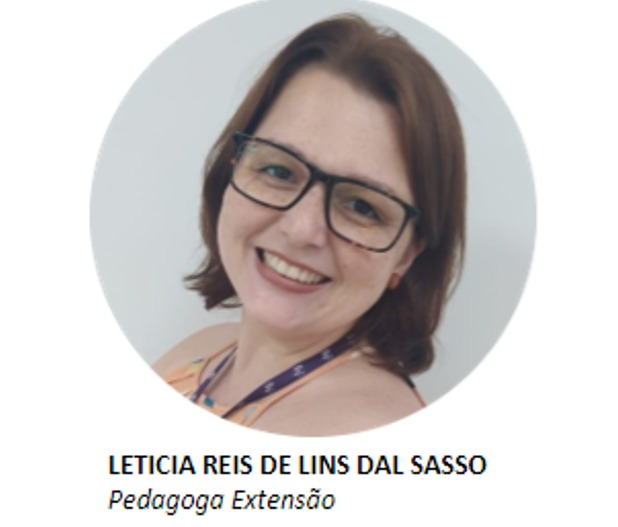
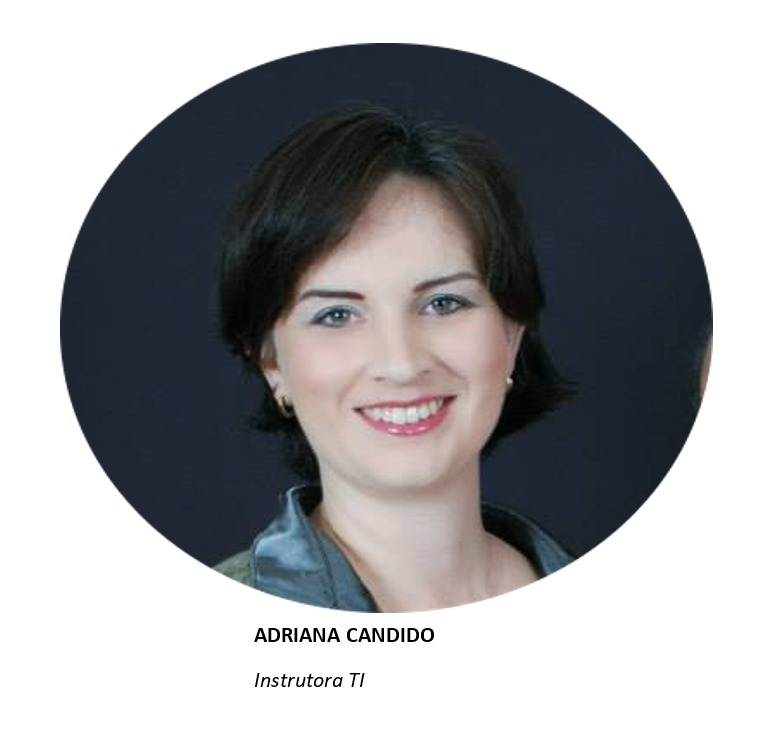
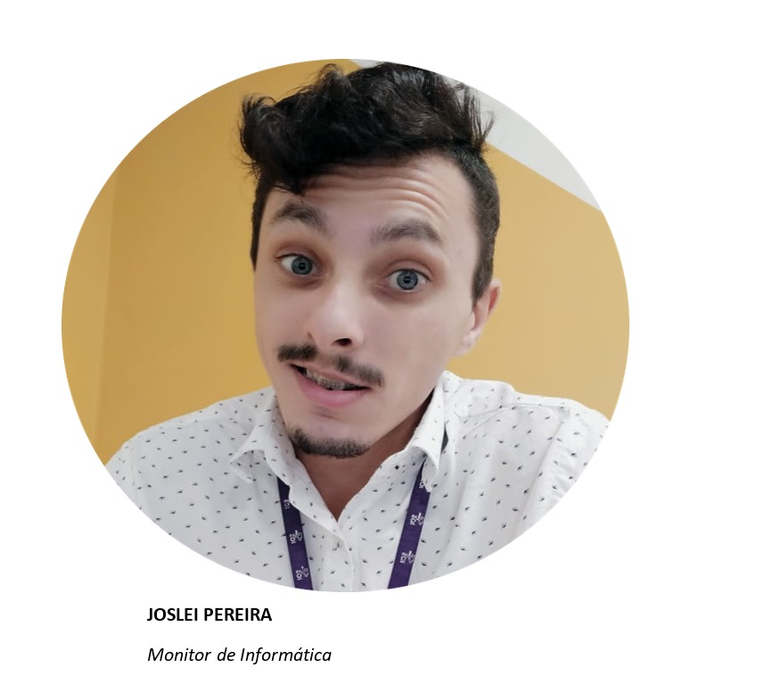

Os professores que lecionam na unidade IOS na filial Joinville levam uma vida um tanto corrida,
são aulas, mentorias, oficinas, reuniões e workshops, e claro, não podemos deixar de lado a vida social
desses pessoal, como, cuidar dos filhos, animais de estimação, fazer suas atividades físicas e o tempo
de
lazer com suas famílias.
PAULO FREIRE
“O professor é aquele que faz duas idéias crescerem onde antes só crescia uma.”
Professora Letícia Dal Sasso

Formada em matemática e pegadogia, a professora Letícia trabalha no IOS há aproximadamente um ano e 11 meses
e seu objetivo
principal de vida é continuar
ensinando, ter uma estabilidade e dividir suas alegrias com seus amigos e família.
A atividade que mais gosta de fazer é ficar com sua família, gosta muito de passear e viajar com os
mesmos.
Odeia confusão, ficar doente e diz que detesta comer fígado.
Ela opta por comer comida salgada como tortas, massas e pizzas, "tudo o que eu não posso comer". Afirma ela.
Onde este(a) profissional se vê daqui 10 anos?
"Eu me vejo trabalhando, contiuando a me desenvolver profissionalmente, dando uma boa eduacação para meu filho e
cuidando
da minha família".

Instrutora Adriana Liamar Cândido

A professora Adriana tem uma ampla formação acadêmica incluindo: Técnica em processamento de Dados pela
Escola
Técnica Tupy, Bacharel em Administração de Empresas pela Universidade Univille, Pós Graduada em Qualidade em
Qualidade
de Software pela Universidade UFLA, trabalha no IOS há aproximadamente um ano.
Seu passatempo preferido é ouvir música e passear com seu filho que atualmente está com 06 anos.
Suas atividades que não gosta inclui cozinhar, lavar o carro e limpar a casa.
Ela opta por comer massas como lasanha, macarrão e panqueca, pois são suas comidas preferidas.
Seu principal objetivo de vida é viver cada vez mais os ensinamentos de Deus, estar bem com sua família,
Criar seu filho da melhor forma possível, ensinando sempre sobre os caminhos de Deus.
Deseja ter realização no trabalho e fazer a diferença na vida das pessoas
Onde este(a) profissional se vê daqui 10 anos?
"Sinceramente , não sei.
Sempre coloco meu futuro nas mãos de Deus e N'Ele espero. Não faço planos a longo prazo, porque a gente
muda
nossas necessidades e prioridades..."

Monitor Joslei Pereira

Cursando pedagogia na Faculdade Censupeg, o professor Joslei está no IOS há aproximadamente um ano
é responsável pelo monitoramento das aulas e também por lecionar sobre o pacote Office no curso de
Gestão Administrativa na fiial em Joinville.
Possui algumas formações como Office, Hotelaria e Turismo e Telemarketing e também já estudou no IOS no ano
de 2019,
ganhando uma premiação por melhor aluno do semestre naquele ano.
Gosta de estar em família e com amigos, curtir os momentos simples da vida com pessoas especiais.
Afirma não gostar de bagunça e muito barulho, pois o silêncio o ajuda a ter melhores pensamentos.
Come de tudo um pouco, mas é fascinado por sorvete com leite condensado e seu doce preferido é paçoca. Jã ao
contrário
não gosta de comer jiló e algumas saladas "amargas".
Seu objetivo de vida é esnsinar, independendente da área em que estiver trabalhando o foco é ensinar.
Onde este(a) profissional se vê daqui 10 anos?
"Me vejo formado, trabalhando na área da educação, meu principal objetivo de vida é ensinar, fazer a
diferença
na vida das crianças, jovens e adultos, ser lembrado como alguém que fez e deu o seu melhor por alguém!"

Professora Vanessa
Está no IOS há__________anos e atua como pedagoga das oficinas oferecidas no intituto.